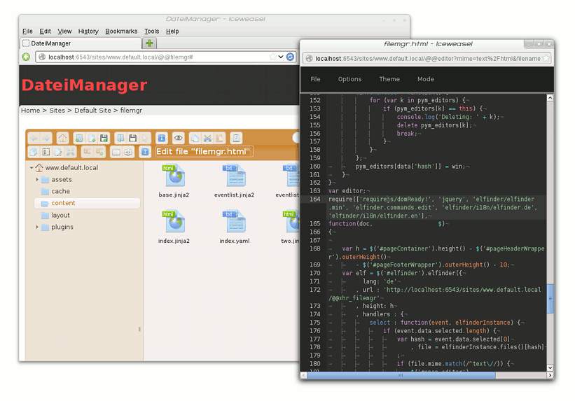

PySite is a system to host and manage multiple websites.
It is not a CMS in the traditional sense. Rather, you manage the contents of a website via a filemanager interface, which gives you access to all settings, the pages, the styles, plugins, you name it. Compose your pages with Jinja templates, and edit your code comfortably with syntax highlighting in the ACE editor.
PySite also contains a facility to manage virtual mailboxes, if you maintain your own SMTP and IMAP server, e.g. with Postfix and Dovecot. Websites and email domains are independent, so you can host mailboxes for domains that do not have a website, and vice versa.
PySite is built with the Pyramid framework and uses elFinder which connects to my implementation of its client API.
Additional info can be found in my blog, and here is the code of a sample site.